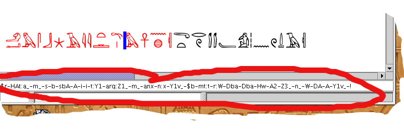

Direct manuel de codage entry
When a text is displayed, the manuel de codage codes for the current line
are shown in a text field :

This field is not here just for the sake of the Manuel
beauty. In fact, you can edit its content, and the text in the
hieroglyphic window will be modified accordingly when you validate
(by typing the Enter key). Note that incorrect Manuel
de codage code will be refused.
ROSMORDUC Serge
Last modified: Thu Nov 3 14:42:09 CET 2005